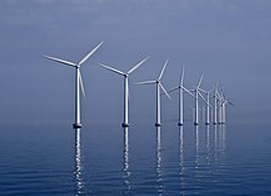

Na atual era em que se passa a humanidade, a sustentabilidade digital é muito importante para o futuro de todos, atingindo diretamente empresas e indivíduos. Fontes de energia renováveis são aquelas que não acabam, pois como já diz o nome, se renovam com o tempo. Esse tipo de energia compõe a parte mais importante para a substituição dos combustíveis fósseis, que aodecorrer da história da humanidade já causaram grandes impactos negativos ao meio ambiente.

As principais fontes de energia são: energia solar; energia eólica; energia hidrelétrica; energia geotérmica; energia de biomassa; energia marinha.
A Universidade Paulista da unidade anchieta no ponto de vista como empresa, utiliza de um datacenter para armazenar seus dados, manter suas aplicações da Web, oferecer os serviços aos estudantes dentre outros fatores já citados.
A Universidade Paulista da unidade anchieta no ponto de vista como empresa, utiliza de um datacenter para armazenar seus dados, manter suas aplicações da Web, oferecer os serviços aos estudantes dentre outros fatores já citados.
Sendo este datacenter próprio ou terceirizado, o consumo de energia gerado por ele é muito grande.
Para a utilização da energia visando menor impacto ambiental causado pelo grande gasto energético gerado pelas tecnologias dentro da universidade, seria interessante a utilização de alguma fonte de energia renovável para a instituição, como por exemplo a instalação de paineis solares no terraço da universidade.
Além disso, uma outra ação que poderia gerar impactos positivos seria o incentivo a realização de iniciações científicas voltadas para as praticas da sustentabilidade digital, para que os estudos feitos fossem aproveitados não só dentro do ambiente da universidade, mas também em outras empresas que acabam por ter esse grande impacto energético e por consequência ambiental.
Na prática, mais da metade da população mundial utiliza energia para usar seus aparelhos eletrônicos. Com tal incentivo e conscientização, com o tempo, poderá haver uma melhora no aproveitamento do uso de energia na região e diminuir grande parte do impacto causado pelo uso de energias não renováveis.